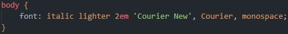

Agora vamos falar sobre mais algumas estilizações que podemos fazer nas nossas fontes, Primeiramente você deve entender a maioria das fontes não vai ter todos os valores declaraveis desses estilos mas todas elas devem ter pelo menos algumas opções disponiveis.
A primeira estilização que nós vamos falar é sobre a font-style essa estilização vai permitir que você de o efeito de italico a sua fonte(o outro efeito não é recomendado então nem vou falar dele oblique).
A nossa segunda estilização sera a font-weight esse estilo nós vai permitir usar tons de negrito na nossa fonte, LEMBRESSE QUE A MAIORIA DAS FONTES NÃO TERAM TODOS OS VALORES QUE SE PODE DECLARAR AQUI MAS ALGUNS TERA SIM agora vamos falar sobre elesem valores númericos, a sua fonte pode ir de 100 até 900, dessa forma ela pode ter tons que vão além dos negritos "gramaticos" e falando neles, esse estilo pode te permitir o uso das opções. lighter que é um ton leve de negrito bold que é o ton padrão de um efeito negrito bolder que é um efeito mais forte de negrito. A proxima estilização é a font-size que nós já falamos na aula anterior, aqui você define o tamanho da sua fonte utilizando ou medidas absolutas ou relativas e por ultimo nós temos a estilização font-family que também já falamos anteriormente, aqui você declara quais seram as fontes que o navegador devera usar, sempre colocando combinações. Enfim veja as imagens de como os valores das estilizações funcionam
Uma coisa muito legal é quanto você tem a chançe de economizar linhas de código sim você já percebeu que códigos muito grandes são pediosos de lidar e é por isso que nós as vezes temos o que é chamado de shorthand, ou atalho que nós ajuda a desenvolver códigos em uma única linha, os beneficios são evidentes MAS SABIA QUE EXISTEM ORDENS DE DECLARAÇÃO E AQUI NÓS VAMOS TER A ORDEM DE DECLARAÇÃO DA SHORTHAND PARA FONTES VAMOS LÁ
A shorthand para fontes funciona do jeito que esta na imagem acima, a ordem é esta ai primeiro você declara qual é o valor da font-style, depois você delcara o valor da font-weight, ai você declara o valor da font-size e termina declarando os valores da font-family. Sabia que não é obrigatorio declarar valores que você não vai usar então, caso tu não tenha um valor para declarar na short hand então não declare. tem a font-variant que seria o valor que voce declararia apos o font-style mas como eu não preciso usar então eu não declaro. mas siga a ordem font-style font-variant font-weight font-size font-family
Exercício Extra Navegador